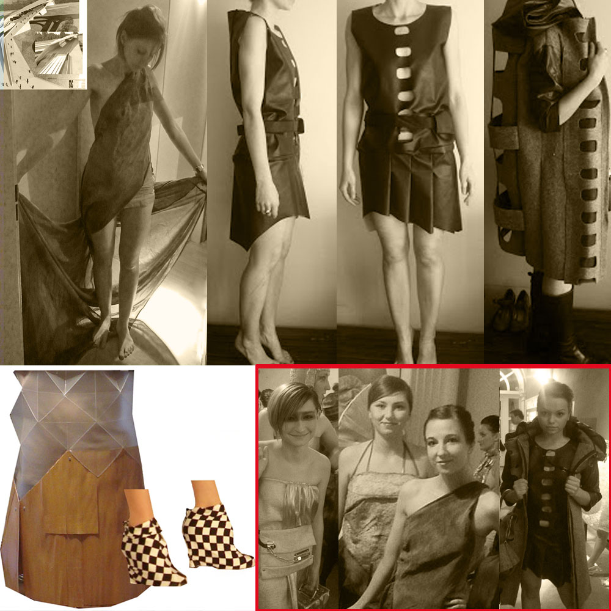

Projekt i wykonanie sukienek na pokaz "Ubrać Wrocław" ("Noc Muzeów" 2012, Muzeum Narodowe we Wrocławiu) oraz projekt i wykonanie sukienki na pokaz "Wnętrza do noszenia" ("Noc Muzeów" 2013, Arsenał Wrocław).
Stroje inspirowane obiektami:
- Węzeł przesiadkowy, Maćków Pracownia projektowa (modelka na pokazie: Joanna Staworzyńska)
- Sedesowiec (zespół mieszkalno-usługowy przy placu Grunwaldzkim), Jadwiga Grabowska-Hawrylak (modelka na pokazie: Ania Pijet)
- Szkoła Teatralna we Wrocławiu, KKN Kozień Architekci (modelka na pokazie: Krystyna Ilnicka)
- Dworzec PKS we Wrocławiu (modelka na pokazie: Dorota Kasprzyszak)
- Wnętrze Audytorium Chemii, K. i M. Barscy (modelka na pokazie: Aleksandra Komborska)

http://www.youtube.com/watch?v=OHYwEIXQIrA
http://www.youtube.com/watch?v=02xTziI_ZXY
http://www.youtube.com/watch?v=2dk9oxJ9lcY